Quiénes somos
Detrás de la organización, el equipo de la ZamJam está formado por seis de estudiantes de Zamora apasionados por los videojuegos, quienes contamos con varias ediciones existosas gracias al apoyo y la colaboración del Hub Internacional de Videojuegos y Animación El Jap! y Synergias
Nuestra historia
La ZamJam nació de la pasión por los videojuegos y la necesidad de crear un espacio para la comunidad de desarrolladores en Zamora. A lo largo de las ediciones, hemos ido aprendiendo y creciendo, fortaleciendo nuestra comunidad y consolidando nuestra posición como sede oficial de la Global Game Jam.
Zamora lleva ya un par de años formando parte de este mapa global, y en 2027, volvemos a abrir las puertas para que cualquier persona con ganas de crear, programe, dibuje, componga música o simplemente tenga ideas, viva esta experiencia en primera persona, codo con codo con el resto del mundo.
De esta forma ayudamos a que más personas descubran el mundo de los videojuegos y se involucren en su creación.
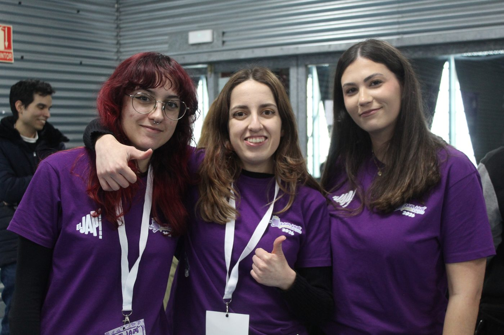
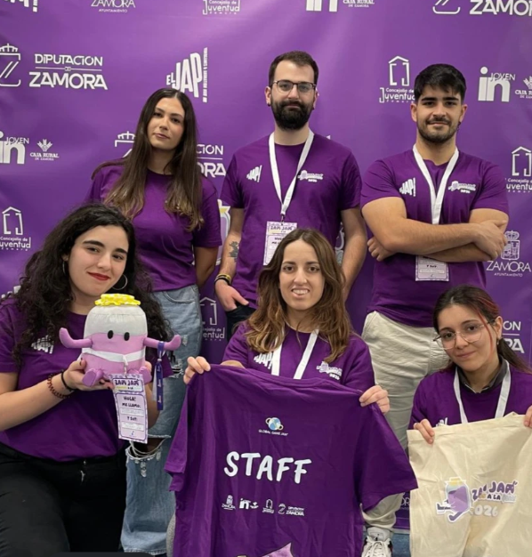
Trayectoria
Los hitos de la asociación.
Primera edición
Se realizó la primera edición de la ZamJam en Zamora.
La voz del Indie
Podcast sobre el desarrollo de videojuegos independientes.
CyL Games Show
Participación en la feria de videojuegos del CyL Games Show.
Asociación: ZamJam
Creación de la asociación ZamJam.
Segunda edición
Se realizó la segunda edición de la ZamJam en el IFEZA.
Segunda edición
Una mini-jam online celebrada en verano.
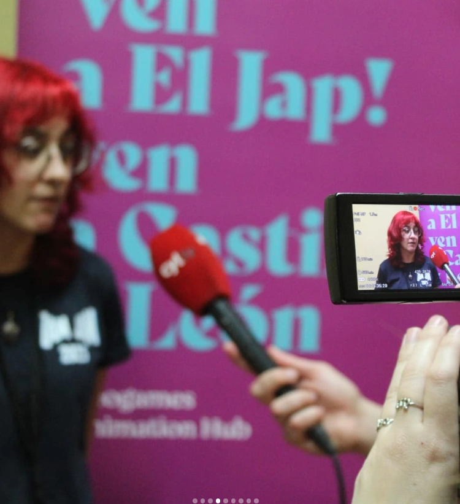
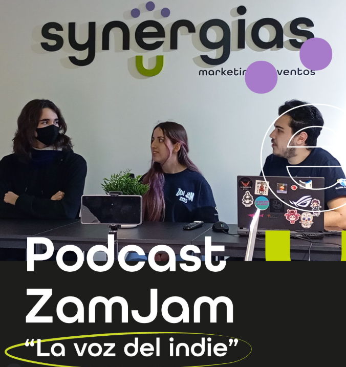
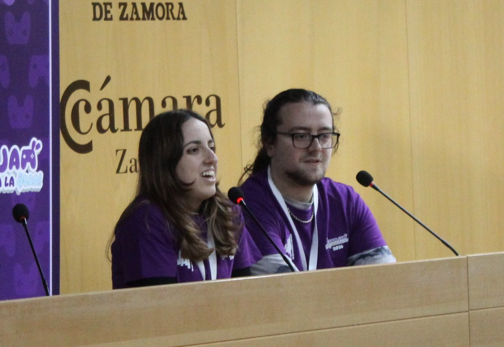
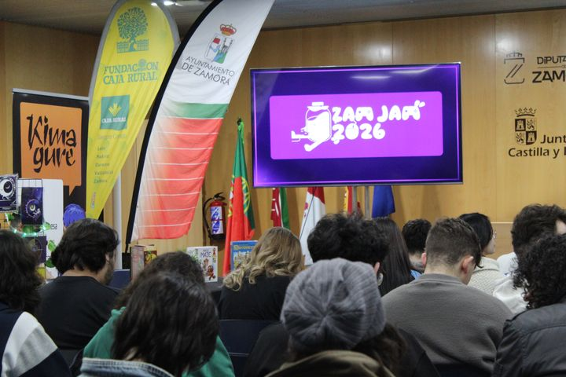
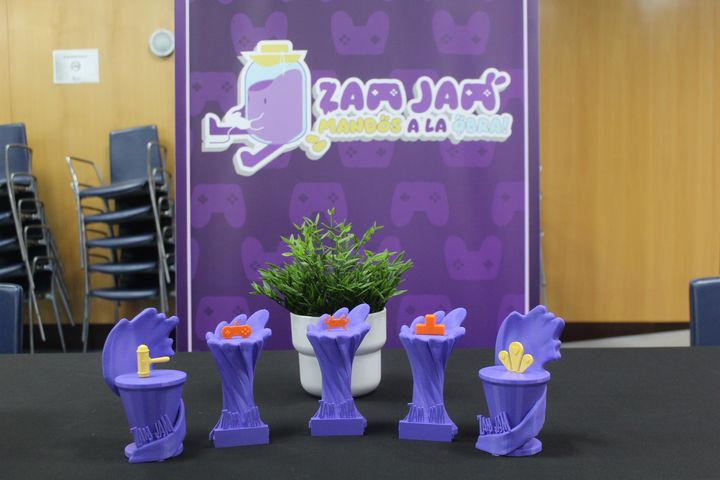
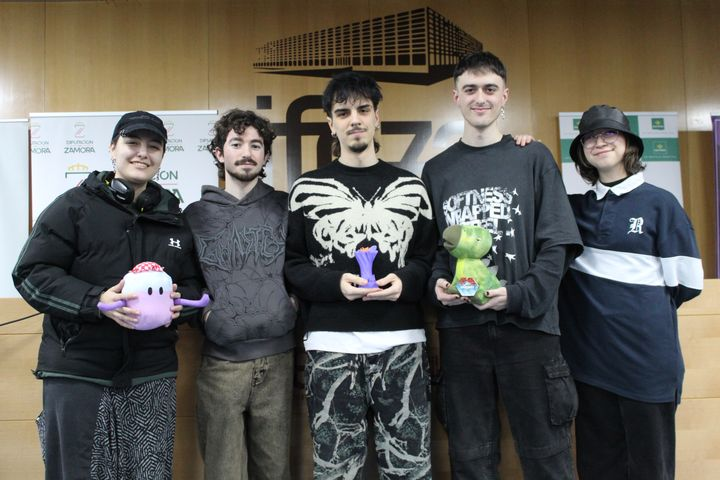
El equipo
[Quién organiza la ZamJam.]
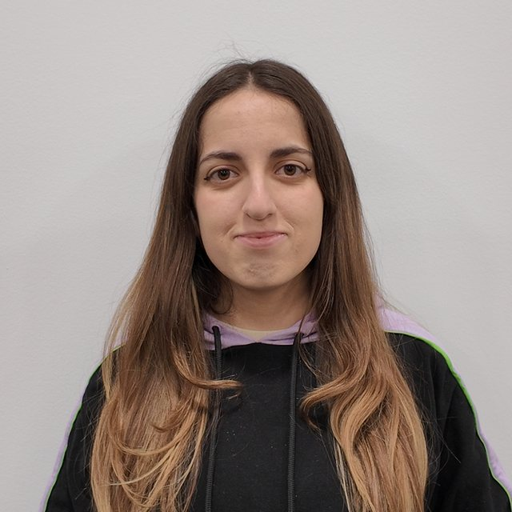
Nazareth
Logística
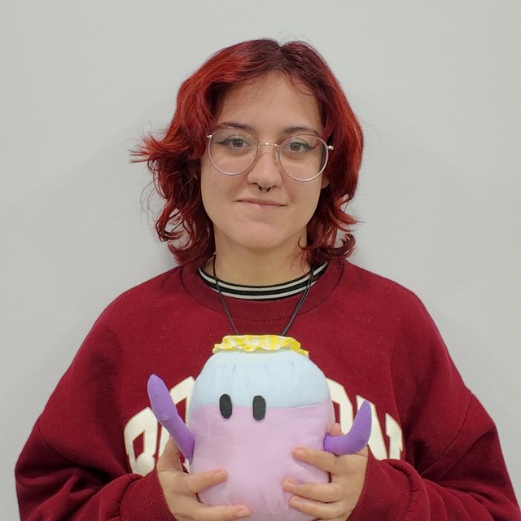
Mer
Dirección y coordinación
Cristian
Patrocinios y atención al público
Nerea
Producción
Trajano
Finanzas
María
Comunicación y redes
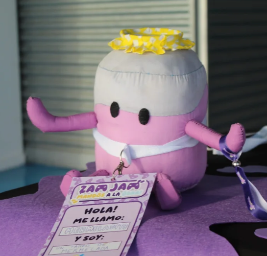
Conoce a Mermeladito
Mermeladito es el alma dulce de la ZamJam. Es nuestro icono y la cara más reconocible del evento: un bote de mermelada morado, con tapa amarilla y mando en mano, que representa todo lo que queremos que sea la jam. Cada año se cuela en el fin de semana para recordarnos que los mejores juegos se cocinan a fuego lento... o en 48 horas, que también vale.
Lo verás en nuestros carteles, en las redes y por todo el evento, acompañando a los participantes desde el viernes hasta la entrega de premios. Porque Mermeladito siempre lo tiene claro: ¡Mandos a la obra!
Co-organizadores del evento


Patrocinadores y colaboradores
Gracias a los patrocinadores y colaboradores que hacen posible este evento: